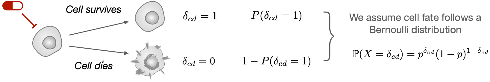
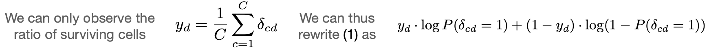
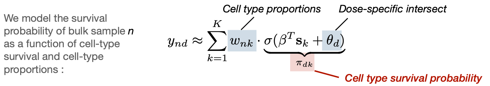

Detailed methods
Mathematical Modelling of Cell-Type-Specific Drug Sensitivity
We assume a cell c has two possible outcomes when exposed to a drug d:
If we sum up the probability to survive for each cells we can get the following likelihood function :
Problem1: we cannot directly observe \(\delta_{cd}\). Indeed, drug sensitivity assay is limited to a bulk measurement!
Problem 2: we have K heterogeneous population of cells in the mixture subjected to a drug sensitivity assay, with varying survival rates: \(\pi_{dk} = P(\delta_{cd}^{(k)} = 1)\).
CLIFF - Cell fate inference for drug sensitivity deconvolution
Here we propose to infer the drug sensitivity of individual cell subtypes using only drug sensitivity data observed on mixed cell populations, considering \(K\) different cell populations in \(N\) mixed samples, with proportions than can be defined as \(\mathbf{w}_n = [w_{n1}, ..., w_{nK}]\), with \(w_{nk} \in [0,1]\) and \(\sum_{k=1}^K w_{nk} = 1\). Drug sensitivity observed in the bulk samples we wish to demix are represented by a matrix \(\mathbf{Y}^{N\times D}\), with \(y_{nd} \in [0,1]\) being the empirical surviving rate of cells, for sample \(n\) and drug concentration \(d\). Therefore the target matrix we wish to predict is \(\hat{\mathbf{Y}}^{N\times D}\), and the predicted values of drug sensitivity is assumed to depend on the underlying drug sensitivity of cell subtypes \(\pi_{ndk} \in [0,1]\) for patient \(n\), drug concentration \(d\) and cell-subtype \(k\), represented as a surviving rate of cells.
The log-likelihood defining our problem, and that CLIFF aims to optimize, is defined by:
As this log-likelihood expression contains the log of a sum, it is difficult to optimize with respect to \(\tilde{\boldsymbol{\beta}}\). Therefore, we use an Expectation-Maximization to iteratively define lower bound functions that we optimize with respect to \(\tilde{\boldsymbol{\beta}}\). The EM algorithm rely on iterating over two steps, the E-step and the M-step. During E-step, we define a new lower bound function. During M-step, we find the optimal coefficient for this lower bound function. New coefficient in turns allows to define the next lower bound function, and so on so forth. Here is a summarized description of the E/M steps:
E-step
During E-step, we define our lower bound function at step \(t\), \(\mathcal{L}_B^{(t)}\) by defining \(q^{(0),(t)}_{ndk}\) and \(q^{(1),(t)}_{ndk}\) using \(\pi^{(t-1)}_{dk}\) defined at previous step :
This gives us the lower bound function of the log-likelihood function, tight to it whenever \(q^{(0),(t)}_{ndk\) and \(q^{(1),(t)}_{ndk}\) satisfies the two condition above.
M-step
During M-step, we optimize the lower bound defined in E-step with respect to \(\tilde{\boldsymbol{\beta}}\), considering the variables \(\mathbf{q}^{(0), (t)}\) and \(\mathbf{q}^{(0), (t)}\) defined during E-step as constants. Also, the two last term of the lower bound defined above do not depend on \(\tilde{\boldsymbol{\beta}}\), thus we can solve the following problem which will produce the same optimal \(\tilde{\boldsymbol{\beta}}\) coefficients:
Interestingly, this equation can be solved with standard libraries using a weighted logistic regression model, where we define weights as being \(\boldsymbol{\gamma}^{(1)}_{dk} = \sum_{n=1}^{N} q^{(1)}_{ndk} \cdot y_{nd}\) and \(\boldsymbol{\gamma}^{(0)}_{dk} = \sum_{n=1}^{N} q^{(0)}_{ndk} \cdot (1 - y_{nd})\).